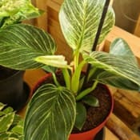
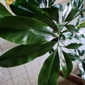

Nom
Exposition en été
Exposition en hiver
Arrosage en été
Arrosage en hiver
Rempotage
Philodendron white measureVoir la galerie photo

Je la place dans un endroit lumineux en évitant qu'elle ne reçoive de soleil direct ou indirect.
En intérieur, il lui arrive de recevoir du soleil au travers d'un voilage.
Si dehors, je la rentre lorsque les nuits ont une température qui passe sous les 15°C.
Je le place ou il aura une bonne luminosité pas trop loin d'une fenêtre dans une pièce ou la température ne descendra pas sous les 15°C.
Je fais moins attention au soleil car celui d'hiver est sans danger.
Je l'arrose de manière régulière afin que le substrat ne sèche pas trop.
Soit par bassinage ou de manière abondante.
La chaleur fera sécher assez rapidement la motte en évitant le rique de moisissures.
Je diminue les fréquences d'arrosage en veillant juste à ce que le substrat ne soit pas trop sec.
Je fais un mélange avec du terreau normal pour plantes d'intérieur auquel je rajoute un peu de fibre de coco.
Je la garde dans un pot en plastique de taille moyenne.
Nom
Exposition en été
Exposition en hiver
Arrosage en été
Arrosage en hiver
Rempotage
Thaumatophyllum spruceanumVoir la galerie photo

Je la place dans un endroit lumineux en évitant qu'elle ne reçoive de soleil direct ou indirect.
En intérieur, il lui arrive de recevoir du soleil au travers d'un voilage.
Si dehors, je la rentre lorsque les nuits ont une température qui passe sous les 15°C.
Je le place ou il aura une bonne luminosité pas trop loin d'une fenêtre dans une pièce ou la température ne descendra pas sous les 15°C.
Je fais moins attention au soleil car celui d'hiver est sans danger.
Je l'arrose de manière régulière afin que le substrat ne sèche pas trop.
Soit par bassinage ou de manière abondante.
La chaleur fera sécher assez rapidement la motte en évitant le rique de moisissures.
Je diminue les fréquences d'arrosage en veillant juste à ce que le substrat ne soit pas trop sec.
Je fais un mélange avec du terreau normal pour plantes d'intérieur auquel je rajoute un peu de fibre de coco.
Je la garde dans un pot en plastique de grande taille afin de pouvoir mettre une plante de petite taille pour garnir le bas.